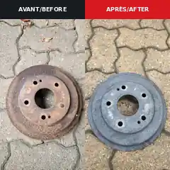
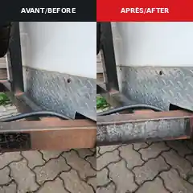
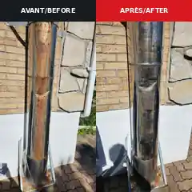
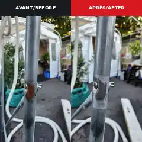

Tambour de frein
Brake drum
Retrait de corrosion de surface sur une pièce automobile.
Surface corrosion removal on an automotive part.
Enlèvement ciblé de rouille, oxydation, peinture, carbone et contaminants. Une solution précise pour la restauration, la préparation avant soudure et l’entretien de pièces de valeur.
Targeted removal of rust, oxidation, paint, carbon and surface contamination. A precise option for restoration, weld preparation and maintenance of valuable parts.

Avant/après provenant de nos propres essais de nettoyage au laser.
Before/after from our own laser-cleaning testing.
Quelques essais et nettoyages réalisés avec notre équipement. Le résultat dépend du métal, de la corrosion, du revêtement et des paramètres utilisés.
Examples cleaned with our equipment. Results vary with the metal, corrosion, coating and process settings.
Retrait de corrosion de surface sur une pièce automobile.
Surface corrosion removal on an automotive part.

Nettoyage ciblé d’acier rouillé sur une structure.
Targeted rust removal on structural steel.

Traitement d’oxydation et de contamination de surface.
Treatment of oxidation and surface contamination.

Nettoyage localisé d’une zone rouillée sans traiter toute la pièce.
Localized rust removal without treating the entire part.
Le laser devient intéressant lorsque vous voulez traiter précisément une pièce ou une zone sans projeter de média abrasif partout.
Laser cleaning is useful when you need to treat a part or specific area without blasting abrasive media everywhere.
Corrosion de surface sur pièces, structures et équipements métalliques.
Surface corrosion on metal parts, structures and equipment.
Décapage localisé lorsque le procédé est compatible avec le substrat.
Localized coating removal where compatible with the substrate.
Nettoyage ciblé des zones à réparer ou à souder.
Targeted cleaning of repair and weld areas.
Restauration et préparation de composantes difficiles à nettoyer manuellement.
Restoration and preparation of components that are difficult to clean manually.
Cadres, supports, attaches et zones préparées avant réparation.
Frames, brackets, hitches and areas prepared before repair.
Dépôts, carbone et contamination sur des surfaces métalliques compatibles.
Buildup, carbon and contamination on suitable metal surfaces.
Ce n’est pas la bonne méthode pour chaque surface. Là où elle convient, elle peut réduire la préparation et concentrer le travail exactement là où il est nécessaire.
It is not the right method for every surface. Where suitable, it can reduce setup and focus the work exactly where needed.
Paramètres ajustables selon le contaminant, le matériau et l’objectif.
Adjustable parameters based on contamination, substrate and objective.
Pas de sable ou de grenaille à récupérer après le traitement.
No sand or blast media to recover after treatment.
Traitez la zone nécessaire sans décaper inutilement le reste de la pièce.
Treat the required area without unnecessarily stripping the rest of the part.
Nous ciblons surtout les entreprises qui ont des pièces métalliques de valeur ou des travaux de préparation de surface récurrents.
We focus on businesses with valuable metal parts or recurring surface-preparation work.
Envoyez une photo de votre pièce rouillée, peinte ou contaminée. Nous vous dirons si elle semble être une bonne candidate pour un essai.
Send a photo of your rusty, painted or contaminated part. We will tell you whether it appears to be a good candidate for a test.
Le résultat dépend du matériau et des paramètres. Nous validons l’application et faisons un essai lorsqu’une surface est sensible ou critique.
Results depend on the substrate and settings. We assess the application and test sensitive or critical surfaces.
Non. Certains matériaux, finis ou contaminants demandent une autre méthode. Nous évaluons la pièce avant de recommander le laser.
No. Some materials, finishes or contaminants are better handled by another method. We assess the part first.
Oui. Le service est mobile pour les applications compatibles dans notre zone de service.
Yes. Mobile service is available for suitable applications in our service area.
Oui. Envoyez la photo, les dimensions approximatives et ce que vous voulez retirer. Nous pourrons rapidement vous dire si un essai vaut la peine.
Yes. Send a photo, approximate dimensions and what you want removed. We can quickly tell you whether a test makes sense.